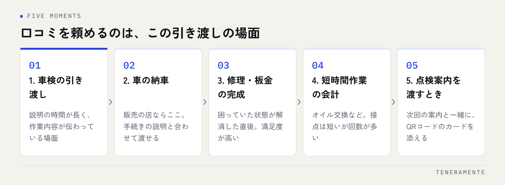

車検の期限が近づいた人も、走行中に異音が出た人も、まずスマートフォンの地図を開きます。結論から申し上げると、自動車販売店・整備工場のMEO対策は、扱う車種と作業内容をプロフィールに書き切るところでほぼ決まります。探している人が知りたいのは「この車を、この作業で、ここへ持ち込めるのか」の一点です。
📌 この記事の結論
Googleビジネスプロフィールに、対応できる作業と扱える車種、代車と引き取りの有無を先に書いてください。そのうえで、車検・納車・修理の引き渡しという必ず顔を合わせる場面に口コミの依頼を組み込む。この2つが、地図検索から入庫につながるかどうかの分かれ目です。
01自動車販売店・整備工場のMEO対策は、作業内容で検索される
MEO（Map Engine Optimization、地図検索での最適化）の解説は、飲食店や美容室を前提に書かれたものが多くあります。車の店は、そこと検索のされ方が大きく違います。
入れられる言葉は「自動車整備」ではありません。「車検 ○○市」「タイヤ交換 近く」「バッテリー 交換 今日」「板金 塗装 ○○町」のように、作業名と地域が組み合わさった形で検索されます。車種名が入ることもあります。輸入車や商用車、ハイブリッド車を持っている人は、持ち込めるかどうかから確認したいからです。
| 項目 | 飲食店・美容室 | 自動車販売店・整備工場 |
|---|---|---|
| 検索する言葉 | 地域名＋業種 | 地域名＋作業名（車検・タイヤ交換・板金など）、車種 |
| 来店の理由 | 楽しみ・習慣 | 期限が来た（車検）か、不具合が出た |
| 見られる情報 | 価格・雰囲気・空き状況 | 対応作業・扱える車種・代車・引き取りの有無 |
| 急ぎ具合 | 低い〜中くらい | 高い（走れない、期限が迫っている） |
| 口コミが増える場面 | 来店ごと | 車検・納車・修理の引き渡し |
急いでいる人ほど、画面を長く読みません。作業名で探した人が開いたときに、その作業ができると分かる状態かどうかを先に点検してください。
02店舗の基本情報は、扱う車種と作業範囲まで書き切る
ビジネス情報欄が「地域に根ざした整備をしています」といった一般的な文章で終わっている店が多くあります。これは、探している人の質問に何も答えていません。
書き切る項目は決まっています。対応できる作業（車検、法定点検、一般整備、板金・塗装、タイヤやオイルの交換、電装、保険の取り扱いなど）、扱える車種（軽自動車、国産乗用車、輸入車、商用車・トラック、ハイブリッド車や電気自動車の対応可否）、工場の区分（認証工場か指定工場か、指定なら車検をその場で完了できること）、代車の有無、引き取りと納車の対応範囲、土日や祝日の受付。販売が中心なら、新車か中古車か、得意なメーカーや車種の傾向も書きます。
料金を書けない場合の書き方
整備は車種と状態で金額が変わるため、金額を出せないことがあります。その場合でも「車種と走行距離によって変わるため、お電話か来店で見積りをお出しします。見積り後のキャンセルも承ります」と書いてあるかどうかで、問い合わせの数は変わります。避けたいのは、聞かないと何も分からない状態です。
03カテゴリと店舗名は、販売と整備のどちらが中心かで決める
メインカテゴリは、売上の中心に合わせます。中古車の販売が柱なら中古車販売店、整備と車検が柱なら自動車修理・整備工場です。車検、板金・塗装、タイヤ販売など近いカテゴリが複数あるため、いちばん大きい柱を1つだけメインに置き、サブカテゴリには実際に提供している作業だけを足します。やっていない作業を足すと、来た問い合わせを断ることになり、評価にも響きます。
店舗名は、看板に出している正式な名前をそのまま入れるのが原則です。「車検が安い」「持ち込み歓迎」といった宣伝の言葉を足すと、ガイドライン違反として情報が差し戻される場合があります。言いたいことは、情報欄や投稿のほうに書きます。
拠点が複数ある場合は、拠点ごとに別のプロフィールを作り、それぞれに住所と電話番号を持たせます。販売の店舗と整備工場が別の住所にあるなら、それも別のプロフィールです。同じ住所で入口も受付も共通なら、無理に分けず1つにまとめて、情報欄で両方を扱っていることを示したほうが分かりやすくなります。
04作業メニューと写真で、何ができる店かを見せる
商品・サービス機能に作業を並べる
商品・サービスの機能を使うと、扱っている作業を一覧の形で見せられます。「車検（軽自動車）」「12か月点検」「オイル交換」「タイヤ組み換え・バランス調整」「板金・塗装の見積り」のように、来店の理由になる単位で並べます。説明文には、所要時間の目安と、代車が必要かどうかを書き添えてください。設定の手順はGoogleビジネスプロフィールの商品・サービス機能の使い方で詳しく整理しています。
写真は工場の中と作業の様子を出す
車の店で足りないのが写真です。外観1枚では、どんな設備があるのか分かりません。載せたいのは、リフトやテスターが見える工場の中、作業中の手元、受付と待合の様子、代車として出せる車、展示している車の並び、そして道路から敷地に入るところです。入りにくい立地ほど、進入路の1枚が効きます。
撮るときは、ナンバープレートと預かった車の持ち主が分かるものが写らないように注意してください。選び方の基準はGoogleビジネスプロフィールの写真の選び方にまとめています。
05口コミは、車検・納車・修理の引き渡しで頼む
車の店は、口コミを頼みやすい業種です。作業が終われば必ず引き渡しがあり、その場で顔を合わせて説明をします。にもかかわらず口コミが増えないのは、頼む場面を決めていないからです。

頼める場面は年に何度も訪れます。車検の引き渡し、車の納車、修理や板金が仕上がったときの引き渡し、オイル交換のような短時間の作業の会計、次回の点検案内を渡すとき。このうちどれで頼むかを店で1つ決め、その場面の作業手順に組み込みます。
言い方は決めておくほうが続きます。「次に探している方の参考になるので、よろしければ地図のほうに一言いただけますか」と伝え、QRコードを印刷したカードを明細と一緒に渡す。これだけで、頼むかどうかを毎回考える必要がなくなります。
返信は、全件に短く返せば十分です。作業内容に触れて「お預かりの間、代車でご不便をおかけしました」と一言添えるだけで、読んでいる人に店の対応が伝わります。低い評価が付いたときも、事実関係を落ち着いた言葉で書いた返信を残してください。探している人は、口コミの中身と同じくらい、店の返し方を見ています。
06地図から来た電話と問い合わせを取りこぼさない
車の店の問い合わせは電話が中心で、しかも急いでいる人からかかってきます。工場で作業中に鳴った電話を取れないと、その人は次の店にかけます。地図の情報を整えるのと同じくらい、受け方を決めておくことが大切です。
- 作業中に取れない時間帯があるなら、その時間を営業時間に含めるかを見直す
- 不在時の録音案内を入れ、折り返しの目安（当日中など）を伝える
- メッセージ機能を有効にするなら、受け取る端末と返す担当を決めてから有効にする
- プロフィールの電話番号を、受付のある番号にする（本部や社長の携帯に転送されたままにしない）
- 問い合わせの内容を1行でも記録し、どの作業の相談が多いかを月末に見る
記録が残っていると、情報欄に足すべき作業が分かります。「持ち込みタイヤの交換はできますか」と何度も聞かれるなら、それは情報欄に書いていない証拠です。
07月に一度のチェックリストと、よくある失敗
設定は一度で終わりますが、情報は古くなります。月に一度、次の項目を見るだけで十分です。
- 営業時間と、年末年始やお盆の特別営業時間が合っているか
- 新しい作業や設備を始めたのに、情報欄と商品・サービスに入っていないものはないか
- 今月の口コミに返信できているか
- 写真を1枚以上追加できたか（入庫した珍しい車ではなく、設備や作業の様子を）
- 投稿で、車検の混み合う時期や点検の案内を出せているか
- 電話の不在が増えていないか
よくある失敗と、その避け方
店舗名に「車検最短」などの宣伝文句を足す…差し戻しや掲載停止の原因になります。看板の名前のままにしてください。
やっていない作業をサブカテゴリに足す…断る電話が増え、評価が下がります。実際に受けられる作業だけに絞ります。
写真が外観と展示車だけ…設備と作業の様子がないと、整備の依頼先としては比べられません。
口コミを依頼する場面を決めていない…引き渡しのどこで頼むかを作業手順に書くまで、依頼は続きません。
作業中に電話が取れない状態を放置する…急いでいる人は次の店へ回ります。録音案内と折り返しの約束だけでも用意してください。
08自分で進める場合と、専門家に任せる場合の分かれ目
一般論として、判断の基準は3つあります。
一つ目は、扱える作業と車種を言葉にできるかどうかです。対応作業、車種、工場の区分、代車の有無まで自分で書き出せるなら、入力そのものは自社で進められます。ここで迷うなら、何を柱にしている店なのかの整理から始めたほうが早く、その整理は外から質問してもらったほうが進みます。
二つ目は、口コミへの返信と写真の追加が毎月回るかどうかです。設定は一度で終わりますが、この2つは続く作業です。繁忙期に1か月以上止まるようなら、文面の型だけでも外に用意してもらう判断が合理的です。
三つ目は、拠点の数です。1拠点なら自社で管理できます。販売と整備で拠点が分かれている、あるいは複数の工場を持っていて情報の鮮度が揃わないなら、まとめて管理する仕組みが必要になります。拠点が増えるほど、手作業では揃いません。
迷う場合は、いまのプロフィールを見てもらい、直すべき点の一覧だけを出してもらう形がもっとも損の少ない進め方です。やることが具体的な作業に分かれれば、自社でやれるものと任せたほうが早いものが自然に見えてきます。
09よくある質問
認証工場ですが、指定工場ではありません。それは書いたほうがいいですか？
持ち込みの部品やタイヤの取り付けを受けています。これはどこに書けばいいですか？
中古車の在庫をプロフィールに載せられますか？
整備工場の口コミに、料金が高いという内容が書かれました。削除できますか？
販売と整備の両方をやっています。カテゴリはどちらにすべきですか？
10まとめ：車の店のMEOは、作業と車種の明記で決まる
自動車販売店・整備工場のMEO対策で見る場所は多くありません。対応できる作業と扱える車種、工場の区分、代車と引き取りの有無を書き切る。カテゴリは柱の1つに絞り、店舗名は看板のまま。写真で工場の中と作業の様子、そして敷地への入口を見せる。引き渡しの場面に口コミの依頼を組み込み、電話の受け方を決めておく。ここまでやれば、「自動車整備」とだけ書いてあったときとは、拾える検索が変わります。
逆に、一般的な紹介文だけを置き、写真が外観1枚のままで、口コミを頼む場面も決めないままだと、急いでいる人は地図の中で店を選べません。作業名で探した人の質問に、先に答えてある店が残ります。
TENERAMENTEなら、作業メニューの書き分けと扱える車種の整理、カテゴリと店舗名の見直し、販売と整備で分かれた拠点の情報を揃えるところまで一緒に組み立てられます。口コミ依頼のカードの文面と返信の型も用意するので、引き渡しのたびに言い方を考える必要がなくなり、繁忙期に止まっていた更新と返信が続くようになります。運用の進め方はMEO/AIO運用代行にまとめていますので、いまのプロフィールを見てほしいという段階でも、お問い合わせからお気軽にご相談ください。